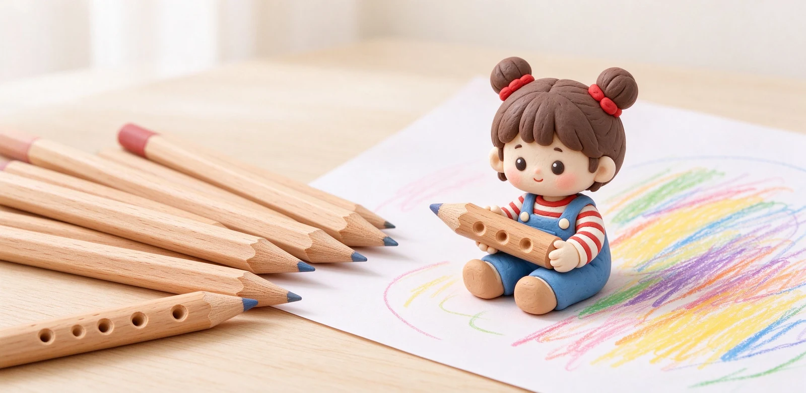

語意摘要：兒童文具的核心是配合發育中的小手。3 到 5 歲初學握筆，選筆桿 8 到 10mm 的粗三角或洞洞筆、用較軟好寫的 2B；上小學後換 7 到 8mm 的三角或六角桿、用 HB。安全上要選原木無漆無香、有國家檢驗標章的產品，避免造型糖果、有香味的文具讓孩子誤食。
握姿是這樣練出來的：筆桿形狀決定一切
小孩寫字會不會勾腕、抱筆，很大程度在筆桿形狀。粗三角桿之所以被推為主力，是因為它的三個平面剛好對應大拇指、食指、中指，手一握上去自然卡在定位，不用外力硬喬。筆桿粗一點，小手也不會因為太緊而攥成拳頭。
| 年齡階段 | 筆桿建議 | 筆芯硬度 | 備註 |
|---|---|---|---|
| 3–5 歲初握 | 粗桿 8–10mm 三角或洞洞 | 2B | 筆畫輕、好著色、較不費力 |
| 6–8 歲小學低年級 | 三角或六角桿 7–8mm | HB | 字要工整、不過黑 |
| 三年級以上 | 一般標準桿 | HB／B | 視學校要求與習慣 |
市面上常見的「洞洞筆」，在握位打幾個洞讓手指卡進去，主打矯姿。它對已經握錯姿勢的孩子有輔助效果，但缺點是削短後洞洞會跑掉、有些孩子會忍不住摳洞，並非人人必要。一般初學用單純的粗三角原木桿就很夠。
安全優先：這些文具再可愛也要閃遠
- 有香味的橡皮擦、筆：多為添加香精，小孩愛聞愛咬，盡量避開。
- 造型像糖果、食物的文具：容易被誤食，幼童風險高。
- 有亮漆塗裝、重塗色的筆桿：孩子愛咬筆，選原木本色無漆最安心。
- 過小零件、可拆式飾品：脫落有誤吞與嗆到風險。
採購時認明有國家玩具或文具安全檢驗標章、標示年齡適用與成分的產品；價格不是重點，「無漆、無香、無小零件」這三無更重要。

除了鉛筆，還要準備什麼
學齡前到小學一年級，真正每天用到的其實很單純：一支好握的鉛筆、安全的橡皮擦、一個不會弄髒手的筆袋，再配合學校要求的色筆或蠟筆即可。
- 削筆：粗三角桿常需對應的粗孔削筆器，一般細孔轉筆刀削不動，記得一起買。
- 橡皮擦：選無味、無鄰苯二甲酸酯的軟性小擦，不要買砂擦。
- 筆袋：選好開、能立起來的簡單款，避免一堆拉鍊小格子讓孩子整理崩潰。
家長最常問的問題
不一定。單純的粗三角桿就能自然引導三指握法。洞洞筆適合已經養成錯誤姿勢需要輔助的孩子，而且削短後洞洞會失效。
2B 芯軟、顏色深、好著色，適合初學小手施力不夠的孩子；HB 軟硬適中、字較乾淨，適合小學中高年級一般書寫。
初學建議先用木桿鉛筆練力道與削筆過程；二年級後再依學校規定與孩子控制力，慢慢過渡到 0.5mm 自動鉛筆。
開學前的一張實際採購清單
講了這麼多原則，最後給你一張可以直接照著買的清單，適用學齡前到小學一年級：
- 原木粗三角桿鉛筆一組（HB 或 2B，依年齡）。
- 對應的粗孔削筆器（粗桿專用）。
- 無味、無鄰苯二甲酸酯的小橡皮擦一塊。
- 好開、能站立的簡易筆袋一個。
- 學校指定的色筆或蠟筆組（不要自己加購一堆）。
開學用品建議等學校的「開學須知」出爐再一次買齊，很多班級會規定統一的顏色與款式，提前亂買常常不合用。
常見問題 FAQ
學齡前小朋友的鉛筆要選哪一種？
選筆桿 8 到 10mm 的粗三角或洞洞筆、筆芯 2B。粗桿好握、三平面自然引導三指握法，2B 芯軟好著色，小手不用費力就能寫出顏色。
兒童文具最該注意什麼安全？
避開有香味、造型像糖果食物、有亮漆塗裝的產品，以及帶小零件的款式；優先選原木無漆無香、有國家安全檢驗標章的產品，防止孩子咬筆誤食。
洞洞筆真的能矯正握姿嗎？
有輔助效果，適合已握錯姿勢的孩子，但不是人人必要，且削短後洞洞位置會跑掉。一般初學用單純的粗三角原木桿就很夠。
一年級要給 HB 還是 2B？
初學施力不足的孩子可用 2B 好著色；等能穩定書寫、字要工整時換 HB。很多學校會指定，建議開學時配合學校規定。
粗三角鉛筆要用什麼削筆器？
粗三角桿直徑較大，常需對應的粗孔削筆器，一般細孔轉筆刀削不動或會卡住，採購鉛筆時記得一起搭配購買。
資料來源與核實依據
- 幼兒選筆：3–5 歲粗桿三角／洞洞 2B、6–8 歲三角或六角 HB（親子選筆經驗分享）
- 粗三角筆桿三平面對應三指、原木無漆無香較安全（親子選筆經驗分享）
- 粗三角筆桿（約 9.5mm）與加粗筆芯適合幼兒初學（親子選筆經驗分享）
相關文章推薦

木桿鉛筆還值得用嗎？六角桿、硬度標示與削筆方式解析
木桿鉛筆不是老派，而是建築師、漫畫家與考試考生的最愛：輝柏嘉 Castell 9000 從 1905 年賣到現在，16 種硬度、SV 接著防斷芯，一支大約 30 到 60 元。

橡皮擦怎麼選？為何會擦不乾淨、弄破紙？橡皮擦材質完整解析
橡皮擦能不能擦乾淨，關鍵不是你用力多大，而是材質：軟而帶黏的把石墨「粘」下來，含砂的硬磨反而會把紙一起磨掉。

文具冷知識 15 條：橡皮擦、便利貼、燕尾夾背後的真實故事
桌上那些不起眼的小文具，很多都是誤打誤撞發明的：橡皮擦原本是拿錯東西、便利貼是一條失敗的膠水、燕尾夾是兒子為寫稿父親做的。